DESENVOLVIMENTO DE UM SISTEMA DE COMUNICAÇÃO COM CRIPTOGRAFIA DE PONTA A PONTA
Trabalho de Curso para obtenção do título de graduação em Ciência da Computação apresentado à Universidade Paulista - UNIP.
Emanuel Chagas PINHEIRO MATTOS
Henrique Sebastião da SILVA ROSA
Lucas Sousa de DEUS
Valério GONÇALVES VIEIRA Jr.
Wanderson AMORIM PINHEIRO
RESUMO
O presente trabalho tem como objetivo o desenvolvimento de um sistema de comunicação digital que utiliza criptografia de ponta a ponta (E2EE) para garantir a privacidade e a segurança das mensagens trocadas entre os usuários. Em um cenário marcado por crescentes preocupações com a proteção de dados pessoais e a vigilância digital, soluções que asseguram a confidencialidade das comunicações tornam-se cada vez mais relevantes. A pesquisa abordou os fundamentos da criptografia simétrica e assimétrica, bem como os protocolos utilizados em sistemas modernos de comunicação segura.
O sistema proposto foi desenvolvido utilizando tecnologias amplamente adotadas no mercado, como Websockets para comunicação em tempo real, e bibliotecas de criptografia como RSA e AES. A arquitetura do sistema foi pensada para minimizar a exposição dos dados, com ênfase na descentralização das chaves e na impossibilidade de interceptação por terceiros, inclusive por administradores do servidor.
Durante o processo de desenvolvimento, foram enfrentados desafios relacionados à configuração de redes, NATs e gerenciamento de conexões persistentes. A solução adotada envolveu o uso de um servidor intermediário para o estabelecimento inicial da conexão, seguida da troca direta de mensagens criptografadas entre os usuários.
Os resultados demonstram que é possível construir uma plataforma segura e funcional de troca de mensagens, mesmo com recursos limitados, contanto que sejam adotadas práticas de segurança desde as etapas iniciais do projeto. Este trabalho contribui para a disseminação do conhecimento sobre criptografia aplicada e reforça a importância da proteção da privacidade em sistemas de comunicação.
Palavras-chave: Comunicação, Criptografia, Privacidade, Segurança, Desenvolvimento de Software, Python.
ABSTRACT
The following document has the objective of developing a digital communication system that utilizes cryptography end to end (E2EE) to guarantee the security and privacy of messages exchanged between users. In a environment where worrying about your personal data is increasingly common, solutions that assure the confidentiality of our communication are becoming ever more relevant. The research touched on the fundamentals of symmetric and asymmetric cryptography, as well as the protocols used in secure and modern communication systems.
The system was developed using technologies that are widely utilized in the ecosystem, such as WebSockets for real time communication, and libraries such as RSA and AES. The system’s architecture was designed to minimize data exposure, with emphasis on hiding the communication keys and on making it harder for third party members to intervene, including the server’s administrators.
During the development process, some challenges related to network configuration, NATs and persistent network management arose. The solution applied involved the use of a intermediary server to establish an initial connection, followed by the exchange of cryptographed messages between the users.
The results show that it is possible to build a secure and functional platform for exchanging messages, even with limited resources, given that the security guidelines are followed from the beginning. This work contributes to the wider knowledge of cryptography and reinforces the importance of protecting privacy in communication systems.
Keywords: Communication, Cryptography, Privacy, Security, Software Development, Python.
A evolução e a perpetuação da humanidade na linha do tempo se deve majoritariamente à capacidade dos indivíduos de estabelecerem mecanismos que possibilitem o compartilhamento e preservação de informações, seja a curto ou longo prazo, de modo a partilhar os conhecimentos adquiridos com seus sucessores.
Desde a era pré-histórica a humanidade tem desenvolvido e aperfeiçoando tecnologias que viabilizem a comunicação entre as pessoas, de modo a superar as barreiras geográficas existentes. Quanto à tecnologia, afirma que ela é “[...] qualquer mecanismo que possibilite ao homem executar suas tarefas fazendo uso de algo exterior ao seu corpo, ou seja, tudo aquilo que se caracteriza como extensão do organismo humano”.
Tendo início com as pinturas rupestres e evoluindo para sinais sonoros e visuais como os sinais de fumaça, o surgimento da comunicação, mesmo que ainda rudimentar, possibilitou ao homem não somente transmitir informações para além de suas capacidades fisiológicas, mas também lhe permitiu compartilhar os conhecimentos adquiridos em vida com seus descendentes.
Com o surgimento da escrita durante a Idade dos Metais (5000-4000 a.C.), na Mesopotâmia em placas de argila e no Egito já por meio de papiros, inicia-se um novo nível do desenvolvimento humano, de modo que o objetivo com o passar dos milênios se tornara a preservação da informação. Milhares de anos depois, já com o intuito não apenas de armazenar a informação, mas também de comunicar em larga escala, entre 1438 e 1440, o alemão Johann Gensfleish Gutenberg aperfeiçoou os métodos de impressão criados pelos chineses cerca de mil anos antes, possibilitando não apenas a produção de livros em grande escala, mas também propiciou o surgimento do jornal, como aborda .
Acompanhando a evolução tecnológica, com o advento da eletricidade surgiu também a invenção do telégrafo que permitiu a transmissão de mensagens por meio de código Morse. Poucos anos depois, embora o italiano Guglielmo Marconi seja tido como o inventor do rádio, o certo é que em 1896 Marconi patenteou o primeiro dispositivo de transmissão sem fios, como observa . Marconi iniciou seus experimentos por volta de 1894, quando conseguira enviar sinais fracos a cerca de 100 metros de distância. Porém, antes que o cientista italiano tivesse êxito em suas experiências, o padre brasileiro Roberto Landell de Moura já havia transmitido voz por meio de ondas eletromagnéticas. afirma que “Há registros de que as primeiras experiências do padre Landell com transmissões de ondas portando a voz humana teriam ocorrido entre 1893 e 1894. No mínimo um ano antes da façanha de Marconi na Itália”.
Observa-se que, desde a era do homem primitivo, os avanços tecnológicos têm ocorrido a um ritmo cada vez mais acelerado, surgindo novas e revolucionárias tecnologias entre intervalos de tempo cada vez menores. Não indiferente disso, em 1943 surgiu o computador (uma máquina enorme que realizava cálculos e ocupava uma sala inteira), mas não demorou muito para que sua dimensão fosse reduzida para poucos centímetros com a chegada dos computadores portáteis e de mão, popularmente conhecidos como smartphones.
Com o surgimento dos computadores o homem teve acesso a um dos últimos insumos necessários para a criação da internet, uma tecnologia que mudaria não apenas a maneira como transmitimos informação, mas a maneira como vivemos. Como que em paralelo com a invenção do computador, surge também a Arpanet em 1969, a primeira rede de computadores, com o objetivo de servir às necessidades militares dos Estados Unidos durante a Guerra Fria, no final da qual a Arpanet, agora denominada Internet, se tornou acessível por cientistas e professores universitários para troca de pensamentos e mensagens nos Estados Unidos. A partir desse ponto vimos a disseminação e popularização da rede internacional de computadores, com um crescimento vertiginoso até aos nossos dias, sendo a internet indispensável em nossas vidas, por ser uma fonte de conhecimento, interatividade, diversão e, principalmente, de comunicação, chegando ao ponto de alguns autores questionarem se a internet deveria ser um direito humano global, conforme argumentado por .
O crescimento vertiginoso das interações online e o fluxo de dados que transitam na internet cresceu de tal forma nos últimos anos que vemos diferentes campos da vida cotidiana intermediada por sistemas digitais. Como atestado por “Em especial em 2020, com a súbita necessidade de isolamento, a modernização do serviço público e privado, a digitalização dos trabalhos e reuniões, vimos a importância da Internet crescer consideravelmente”.
Nesta realidade onde a Internet, se tornou como de forma nunca antes vista, uma intermediadora do tráfego de comunicações e informações, emergem, junto de todas as possibilidades, preocupações a respeito da privacidade dos indivíduos. Acontecimentos recentes ilustram muito bem essa problemática, nos quais podemos ver uma grande escalada de ataques cibernéticos acontecendo frequentemente, e até mesmo com grandes corporações. Um exemplo disso é o ataque conhecido como o maninthemiddle (Homem no Meio) que ocorreu com a empresa EquiFax dos Estados Unidos, em 2017, noticiado pelo Portal , tratando-se da exfiltração de quase 150 milhões de dados categorizados como no ambiente de Segurança da Informação por . Estas informações incluem: contatos de clientes, números de cartões de créditos, endereços, datas de nascimento e números de carteiras de motoristas. Portanto, devemos sempre nos perguntar como nossos dados estão sendo tratados no mundo digital, a cada clique, uma nova ação pode ocorrer, tornando fundamental compreender os mecanismos por trás da comunicação, sempre priorizando nossa própria segurança.
O número de crimes cibernéticos, vazamentos de dados, fraudes, situações de abuso de poder por parte de empresas ou pelo estado, têm aumentado, como explorado por . Como assegurar que a internet seja um ambiente seguro para comunicação, liberdade de expressão e pensamento e propicie, enfim, uma interface segura de comunicação e troca de informações entre seus usuários?
Observando esta problemática sob a ótica do tráfego de pacotes em rede, podemos visualizar o modelo de redes de computadores, que conhecemos como Modelo OSI, cuja finalidade é nortear como os pacotes são criados em baixo nível e trafegados até chegarem ao nível mais superior para o usuário, logo temos a seguinte sequência:
Aplicação: camada de tratamento mais próxima ao usuário e os protocolos de software.
Apresentação: camada destinada à conversão da mensagem para entrega em modelo entendível tanto para linguagem de máquina quanto à humana(dependendo do direcionamento do pacote em questão).
Sessão: camada destinada a manusear o controle de sessão do usuário.
Transporte: camada destinada a gerenciar o tipo de protocolo para envio da comunicação TCP/UDP.
Rede: camada destinada a separar os hosts de origem e destino da nossa comunicação.
Enlace de Dados: camada destinada ao controle de erros conhecidos como checksum e aprendizagem de endereço físico entre dispositivos local conhecidos como MAC.
Físico: esta camada é a mais baixa onde trata como o pacote será transformado para envio no meio físico, seja elétrico ou sem fio.
Tal base tornou-se essencial para a construção e aprimoramento dos modelos de protocolos de redes para a internet. Analisando toda essa cadeia de estrutura base, percebe-se a importância de avaliarmos os processos de criptografia para as camadas mais altas deste modelo, uma vez que, as camadas de aplicação se não criptografadas, possibilitam a visualização das informações em texto claro violando nossa segurança, o que muitas das vezes passa despercebido aos usuários que não tomam ciência disso.
Portanto, ao analisar a importância da internet dentre os meios de comunicações atuais, em paralelo com as vulnerabilidades cibernéticas que se mostram cada vez mais evidentes, mesmo com a implementação de medidas de proteção de dados nos meios de comunicação, chega-se à conclusão de que o desenvolvimento de um sistema de comunicação com criptografia de ponta a ponta e opensource, utilizando de uma abordagem de criptografia híbrida, viabiliza a inviolabilidade da comunicação, assim como sua autenticidade. Ademais, por ser de código aberto, qualquer usuário ou pessoa que tenha interesse em auditar o código fonte da aplicação, buscando certificar-se que sua comunicação é realizada de maneira segura pela rede, pode fazê-lo sem impedimentos.
Este projeto toma como iniciativa, deliberar sobre a vulnerabilidade dos dados e transparecer uma solução prática e acessível. Nessa conjuntura, o objetivo primordial deste trabalho é desenvolver um sistema de comunicação de software livre, utilizando um modelo híbrido de criptografia simétrica e assimétrica para assegurar a privacidade na troca de mensagens, além da implementação do não repúdio, o qual garante que a mensagem do remetente não possa ser contestada, desse modo temos a certeza da autenticidade da comunicação.
Desenvolvimento da aplicação de back-end usando Python, com o auxílio de bibliotecas ou frameworks como por exemplo, Flask, Cryptography, Typer, dentre outras.
Desenvolvimento de uma interface de front-end que seja amigável ao usuário, utilizando tecnologias como por exemplo, HTML, CSS, JavaScript, dentre outras.
Uso de algoritmos de criptografia simétrica e assimétrica para implementação de metodologias criptográficas de ponta.
Implementação de um modo de assinaturas das mensagens, garantindo não apenas a inviolabilidade da comunicação, mas também sua autenticidade.
Comparação de diferentes algoritmos de criptografia para segurança e desempenho.
Avaliação do impacto da criptografia na latência da comunicação.
Testes de segurança usando ferramentas como Wireshark para avaliar se as informações são trafegadas de maneira segura.
Testes de usabilidade com usuários para validar a experiência.
As comunicações na era moderna necessitam de mais notoriedade aos pilares essenciais de segurança da informação, prezando sempre a segurança ao usuário final, seja em qual meio a comunicação ocorrer, é de suma importância a seguridade, sendo assim minimizando as chances de interceptações indevidas no tráfego. Em virtude disso, não só contribuímos para o avanço da segurança digital, mas também a importância da proteção de dados em comunicação digital.
Há muitos anos, a informação é uma ferramenta crucial para se obter vantagens sobre seus concorrentes. Criptografá-la para impedir acesso por terceiros, se tornou necessário para a confiabilidade da transmissão das informações e da privacidade dos indivíduos. Assim como dizem que “Proteger mensagens e informações sigilosas é uma prática que remonta aos primórdios da humanidade, principalmente em contexto de guerra e diplomacia”.
Ao tratarmos de comunicação por meios digitais, transportando-a por intermédio de redes públicas de computadores, como é o caso da internet, torna-se imprescindível garantir a segurança dessa comunicação, de modo a garantir os fundamentos da segurança da informação, sendo eles, disponibilidade, integridade, controle de acesso, autenticidade, não-repudiação e privacidade, como aborda . Mostra-se necessária a implementação de técnicas computacionais que visam atender os requisitos para a proteção da comunicação. Nessa conjuntura, dois tipos de criptografia se mostram bastante promissores: a simétrica e a assimétrica.
No método de chave simétrica, tanto a criptografia dos dados quanto a descriptografia são feitas com base em uma única chave chamada de chave privada, também podendo ser chamada de chave secreta. Um canal seguro é necessário para compartilhar essa chave entre o remetente e o destinatário, de modo a garantir que nenhuma pessoa não autorizada possa obter a chave. A Figura ilustra o processo de criptografia simétrica.
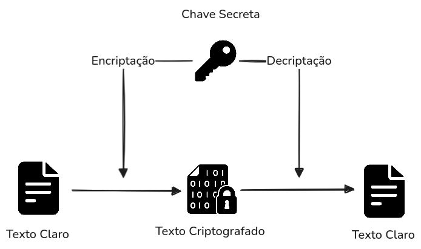
Já na criptografia assimétrica duas chaves são necessárias: uma é a chave privada que deve ser mantida em segredo e a outra é a chave pública. A criptografia é realizada usando a chave pública, já a chave secreta é usada para descriptografar o conteúdo cifrado. Ambas as chaves são matematicamente relacionadas entre si. É importante ressaltar ainda, que não é possível descriptografar o texto com a chave pública, logo esta pode ser conhecida por pessoas terceiras. Mesmo que os sistemas assimétricos possibilitem um nível maior de segurança, eles podem não ser adequados para criptografar grandes volumes de dados, como ressalta . Isso ocorre porque a velocidade é lenta em comparação com os sistemas baseados em chaves simétricas e eles também apresentam uma maior taxa de utilização da CPU. A Figura ilustra o processo de criptografia assimétrica.
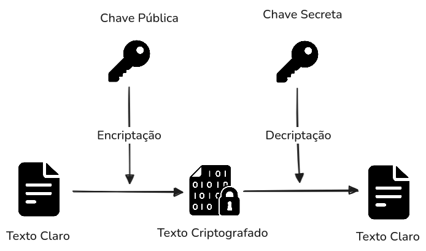
Tendo em vista que, em redes, compete a camada de aplicação garantir a segurança das informações trafegadas pelas camadas inferiores, uma vez que esta, seja a principal no objetivo de comunicar com a outra parte, onde é gerado todo o conteúdo que será lido pelo usuário de destino. Por ser o ponto final de consumo e envio de dados, essa camada se torna um alvo recorrente para ataques que buscam capturar, manipular ou redirecionar informações sensíveis.
Em ambientes abertos e descentralizados, como é o caso de aplicações com criptografia ponto a ponto (P2P), os riscos são amplificados. A segurança da aplicação não pode depender exclusivamente de mecanismos criptográficos isolados. É fundamental que o protocolo de comunicação utilizado seja projetado para resistir a ataques mesmo sob as piores condições, como destaca , “Em redes abertas como a Internet, protocolos devem funcionar mesmo sob suposições de pior caso, como interceptação ou modificação de mensagens por invasores” 1.
Em um cenário cada vez mais conectado, a comunicação digital segura se tornou uma necessidade central para garantir a integridade e a privacidade das informações trocadas entre usuários. Aplicações de mensagens instantâneas, especialmente aquelas que operam em estruturas descentralizadas ou P2P, enfrentam desafios significativos quanto à proteção de dados sensíveis.
A confidencialidade das mensagens e a identidade dos participantes são aspectos críticos nesse contexto. A ausência de um controle centralizador expõe os usuários a um risco maior de interceptações, falsificações e ataques de engenharia social. Assim, a adoção de protocolos seguros e validados é essencial para resguardar os direitos fundamentais dos usuários, como o direito à privacidade.
Segundo , “[...] usuários dessas tecnologias dependem de uma infraestrutura segura para garantir direitos e liberdades, como o direito à privacidade” 2. Essa afirmação reforça a ideia de que a segurança da infraestrutura digital não é apenas um requisito técnico, mas também um compromisso ético e legal, sobretudo quando se trata da troca de mensagens pessoais ou confidenciais.
Portanto, o uso de criptografia de ponta a ponta (end-to-end encryption) aliada à validação formal dos protocolos utilizados se mostra indispensável. Ferramentas como o avispatool são relevantes neste cenário, por permitirem uma análise automatizada e profunda de falhas em protocolos, incluindo casos em que a criptografia permanece intacta, mas a lógica do protocolo pode ser explorada por agentes mal-intencionados.
A proteção de dados em uma aplicação de comunicação segura, como a proposta neste trabalho, deve ser tratada desde a concepção do sistema, incorporando práticas como privacybydesign e validação automatizada, de forma a garantir não apenas a funcionalidade da comunicação, mas também a confiança de seus usuários.
A segurança em comunicações digitais exige que não apenas a confidencialidade seja preservada, mas também que se garanta a autenticidade da origem da mensagem, sua integridade, e, em muitos casos, o não repúdio — ou seja, que o emissor não possa negar posteriormente a autoria da mensagem enviada. Em sistemas descentralizados ou P2P, onde não há um servidor central responsável por intermediar ou validar o tráfego, essa responsabilidade recai sobre mecanismos criptográficos robustos e cuidadosamente implementados.
Aplicações de ponta adotam a arquitetura P2P com criptografia de ponta a ponta (E2EE), o que garante que apenas os dispositivos dos usuários tenham acesso ao conteúdo das mensagens. Entretanto, a ausência de um intermediário confiável exige o uso de assinaturas digitais como mecanismo de validação direta entre as partes, assegurando que o conteúdo recebido não foi alterado durante o tráfego e, mais ainda, que foi gerado pelo remetente legítimo.
Conforme apresentado por , “[...] as assinaturas digitais permitem ao destinatário verificar a autenticidade e a integridade da mensagem, e ao mesmo tempo, oferecem serviços de não repúdio”3. Esse conceito é essencial em ambientes onde a troca de informações sensíveis pode acarretar consequências legais ou operacionais, e onde os servidores não retêm cópias das mensagens para verificação posterior.
Além disso, o uso de criptografia e assinatura digital contribui para a minimização de dados, um dos pilares da proteção de dados moderna segundo legislações como a LGPD. Em vez de armazenar o conteúdo das mensagens, o sistema limita seu papel ao registro temporário da chave criptográfica pública, garantindo que nenhuma informação sensível permaneça no ambiente do servidor após o encerramento da sessão. Isso não só reduz drasticamente a superfície de ataque do sistema, como também fortalece sua conformidade com princípios legais de privacidade.
Ao incorporar práticas como assinaturas digitais baseadas em esquemas robustos (como Ong-Schnorr-Shamir), a aplicação demonstra que é possível manter a integridade da comunicação e responsabilizar os envolvidos, sem comprometer a privacidade dos usuários ou criar pontos centrais de vulnerabilidade. Trata-se de um equilíbrio técnico e ético entre segurança, autonomia e responsabilidade, que se alinha diretamente com as demandas atuais de sistemas distribuídos e respeitosos à privacidade.
A utilização de criptografia fim a fim (E2EE) se destaca por sua capacidade de eliminar o acesso do provedor ao conteúdo das mensagens, promovendo um novo paradigma de segurança digital. Em aplicações tradicionais, os servidores intermediários desempenham um papel ativo no processamento das mensagens, o que os torna pontos vulneráveis a vazamentos, acesso indevido ou mesmo requisições judiciais de conteúdo. No entanto, a arquitetura E2EE rompe com essa lógica, garantindo que nem mesmo o provedor tenha acesso às mensagens trocadas entre os usuários.
De acordo com , “A criptografia de ponta a ponta (E2EE) é um padrão de segurança para comunicação no qual apenas o remetente e o destinatário pretendido podem ler as mensagens entre eles. Em particular, mesmo a plataforma não consegue ler essas comunicações, apesar de ainda atuar como intermediária”4. Esse modelo descentraliza o controle da informação, deslocando a responsabilidade da proteção para as extremidades — ou seja, os próprios dispositivos dos usuários, que são os únicos com acesso às chaves de decriptação.
A aplicação proposta neste trabalho adota esse princípio ao extremo, utilizando apenas as chaves criptográficas de cada usuário na sessão, sendo excluídas ao término da comunicação e renovadas ao início de uma nova sessão, assim como o endereço ou identificador do usuário com o qual se deseja comunicar. O conteúdo da mensagem, por sua vez, nunca transita em texto claro pelo servidor, nem tampouco é armazenado. Isso garante que, mesmo em caso de invasão ou interceptação de dados do servidor, nenhum conteúdo sensível possa ser acessado ou reconstruído.
Essa abordagem está em conformidade com as práticas modernas de segurança digital, que reconhecem o risco crescente do chamado "problema do intermediário confiável". Na prática, E2EE transforma os servidores em meros “retransmissores cegos”, incapazes de interpretar ou manipular o conteúdo que transportam. Essa é uma característica fundamental para garantir não apenas a segurança das informações, mas também a confiança do usuário no sistema.
Além disso, esse modelo fortalece o princípio do privacybydesign, ao considerar a privacidade como um requisito estrutural da arquitetura do sistema, e não como uma camada superficial ou opcional. O mínimo armazenamento de dados sensíveis e a exclusão automática de informações auxiliares após a finalização da sessão de comunicação são componentes adicionais que reforçam a confidencialidade e reduzem a superfície de ataque do sistema.
No contexto legal, esse modelo também se alinha com os princípios estabelecidos por regulamentações como a LGPD (Lei nº 13.709/2018) no Brasil e o da União Europeia. Ambas as legislações reforçam o conceito de minimização de dados, exigindo que apenas os dados estritamente necessários sejam coletados e tratados, além de garantir transparência, finalidade específica e segurança da informação.
A criptografia E2EE, ao garantir que os dados em trânsito sejam inacessíveis mesmo para o controlador, mitiga riscos regulatórios e reduz a responsabilidade legal da aplicação, principalmente no que diz respeito à guarda e exposição de dados pessoais. Como apontado por , “[...] funcionalidades de IA ou análise de dados em sistemas E2EE devem ser sempre opcionais e precedidas de consentimento explícito, dada a sensibilidade e os riscos legais envolvidos”5.
A proteção de dados em uma aplicação de comunicação segura, como a proposta neste trabalho, deve ser tratada desde a concepção do sistema, incorporando práticas como privacybydesign e privacybydefault, promovendo a privacidade como um requisito estrutural da arquitetura, e não como uma funcionalidade opcional ou complementar. Nesse contexto, o sistema implementa validações automatizadas, limita o armazenamento de dados sensíveis, adota criptografia robusta e evita qualquer exposição desnecessária do conteúdo ao servidor, garantindo não apenas a funcionalidade da comunicação, mas também a confiança dos usuários, o fortalecimento da segurança técnica e a conformidade legal.
As comunicações digitais transformaram radicalmente a maneira como as pessoas interagem, compartilham informações e constroem relacionamentos. Essas transformações só foram possíveis graças ao avanço das tecnologias que permitiram a troca de dados por meio de dispositivos conectados. Em vez de depender exclusivamente de encontros presenciais ou arquivos físicos, atualmente é possível transmitir mensagens instantaneamente entre pontos distantes, de uma forma quase imperceptível .
As informações trafegam de maneira organizada, segura e eficiente, graças à comunicação moderna. Para garantir que as mensagens cheguem ao destino correto, os dados percorrem uma série de camadas que se encarregam de endereçar, embalar e redirecionar os pacotes ao longo do caminho, como afirma . Esses processos criam uma rede no qual dispositivos, servidores e usuários trocam informações em tempo real, de forma quase transparente ao usuário final, mas altamente complexa em seu funcionamento interno.
Nesse contexto, aborda sobre como a preocupação com a segurança se tornou um fator essencial por intermédio do aumento do volume de dados e da sensibilidade das informações transmitidas, assim como, a necessidade de garantir que apenas os envolvidos em uma conversa tenham acesso ao conteúdo trocado. Esses métodos de proteção impedem o acesso indevido, mesmo em um ambiente de rede sujeito a riscos e interferências, é possível manter a confidencialidade e a integridade da comunicação.
Além da segurança, um aspecto igualmente essencial na comunicação digital contemporânea é a capacidade de interatividade em tempo real. A troca contínua de informações entre sistemas e usuários permite que interações provém de maneira natural, como em conversas instantâneas ou em ambientes colaborativos online. Para viabilizar essa dinâmica, torna-se necessário adotar arquiteturas de comunicação que possibilitem conexões estáveis, bidirecionais e eficientes, mesmo diante de variações na infraestrutura da rede. Essa característica não apenas aprimora a experiência do usuário final, como também amplia significativamente as possibilidades de aplicação dessas tecnologias em diversos contextos, incluindo plataformas educacionais, serviços de atendimento ao cliente e sistemas interativos de missão crítica .
O protocolo Websocket6 documentado na RFC 64557 em 2011 pela , foi desenvolvido para substituir tecnologias de comunicação bidirecional baseadas em HTTP. O protocolo permite que aplicações web se comuniquem com o servidor utilizando o protocolo TCP na camada de transporte. Embora projetado principalmente para navegadores web, o Websocket também pode ser utilizado para diferentes finalidades.
O protocolo possibilita a transmissão de mensagens contendo texto em codificação UTF-8 ou dados binários. Seu cabeçalho foi projetado para ser conciso, resultando em menor overhead e reduzindo o consumo de largura de banda. Tais características, fazem com que o protocolo seja de grande valia para o desenvolvimento da aplicação proposta neste trabalho.
O protocolo funciona estabelecendo inicialmente uma conexão entre cliente e servidor usando cabeçalho HTTP sobre um único socket TCP. Após estabelecida a conexão, o cabeçalho HTTP é substituído pelo cabeçalho Websocket, permitindo a troca simultânea de mensagens em ambas as direções através de uma conexão persistente e dedicada. Isso possibilita que o servidor envie mensagens ao cliente a qualquer momento. A confiabilidade da comunicação é assegurada por mecanismos próprios do protocolo. A Figura demonstra o processo de comunicação do protocolo Websocket.
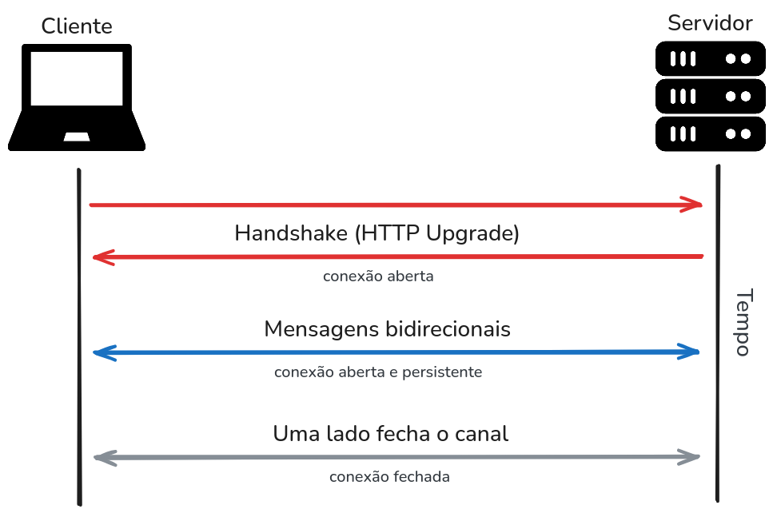
O Python8, principal linguagem de programação utilizada no desenvolvimento deste projeto, é uma linguagem de alto nível, interpretada e multiparadigma, criada por Guido van Rossum e lançada em 1991. Com uma sintaxe simples e legível, o Python foi projetado para priorizar a clareza do código e a produtividade do desenvolvedor, o que a torna uma excelente escolha tanto para iniciantes quanto para profissionais experientes.
Ao longo dos anos, o Python consolidou-se como uma das linguagens mais populares do mundo, sendo amplamente adotada em áreas como desenvolvimento web, automação de tarefas, análise de dados, inteligência artificial, ciência de dados e desenvolvimento de sistemas embarcados. Possui uma vasta biblioteca padrão e um rico ecossistema de bibliotecas e frameworks de terceiros, que facilitam a implementação rápida de funcionalidades complexas.
O Python adota recursos modernos como tipagem dinâmica, gerenciamento automático de memória (garbage collection), programação orientada a objetos e suporte nativo a programação assíncrona (async/await). Essas características, combinadas com a simplicidade de uso e uma comunidade ativa e colaborativa, contribuíram para o seu crescimento contínuo e adoção em larga escala por empresas e instituições de ensino.
Uma análise realizada por comparou o desempenho e a produtividade das linguagens Python, Java e C++ em tarefas computacionais diversas. O estudo concluiu que, embora Python apresente desempenho inferior em termos de tempo de execução, sua simplicidade e velocidade de desenvolvimento oferecem vantagens significativas, especialmente em projetos com foco em prototipação rápida e manutenção facilitada. Esses fatores juntamente com o fato da linguagem oferecer suporte nativo ao protocolo Websocket, reforçam a escolha do Python como linguagem principal adotada neste projeto.
O desenvolvimento da aplicação proposta exigiu a utilização de bibliotecas e frameworks que oferecessem tanto robustez quanto simplicidade na implementação das funcionalidades necessárias. A escolha das tecnologias levou em consideração critérios como segurança, desempenho, facilidade de integração, suporte a padrões modernos e ampla adoção na comunidade de desenvolvimento. Dentre as diversas opções disponíveis no ecossistema Python, foram selecionadas ferramentas consolidadas e bem documentadas, capazes de atender aos requisitos técnicos do projeto com eficiência. A seguir, serão apresentadas duas dessas tecnologias essenciais: a biblioteca cryptography, utilizada para os mecanismos de criptografia e proteção de dados, e o framework FastAPI, responsável pela criação do servidor intermediário baseado em Websocket.
Para a implementação das funcionalidades de segurança e proteção dos dados trafegados e armazenados na aplicação, foi utilizada a biblioteca Cryptography9, amplamente reconhecida na comunidade Python por sua robustez e conformidade com padrões modernos de criptografia. Desenvolvida com foco em simplicidade, desempenho e segurança, a biblioteca fornece uma interface de alto nível para algoritmos criptográficos amplamente utilizados, além de acesso a construções de baixo nível para casos mais avançados.
No contexto deste projeto, a biblioteca foi empregada para realizar tanto criptografia simétrica quanto assimétrica. A criptografia simétrica foi implementada utilizando o algoritmo AES (AES) com chave de 256 bits, conhecido como AES-256, que oferece alto grau de segurança e eficiência na codificação e decodificação de dados com uma única chave secreta. Já para a criptografia assimétrica, foi utilizado o algoritmo RSA, permitindo a troca segura de informações por meio de um par de chaves pública e privada, garantindo confidencialidade e autenticação. Essa combinação permite à aplicação proteger tanto os dados em repouso quanto os em trânsito, mantendo a integridade e a confidencialidade das comunicações entre os usuários.
A adoção da biblioteca Cryptography, aliada a boas práticas de geração e armazenamento seguro de chaves, contribuiu significativamente para o fortalecimento dos mecanismos de segurança da aplicação, alinhando-se às diretrizes de proteção de dados sensíveis exigidas em contextos de comunicação segura.
O FastAPI10 foi a tecnologia escolhida para o desenvolvimento do servidor responsável por intermediar a comunicação entre remetente e destinatário, por meio de conexões Websocket. Criado por Sebastián Ramírez e lançado em 2018, o FastAPI é um framework moderno para construção de APIs web em Python, baseado no padrão ASGI (ASGI). Ele se destaca por sua performance comparável a frameworks escritos em linguagens compiladas, como Node.js e Go, além de oferecer tipagem forte com validação automática via Pydantic11, documentação interativa gerada automaticamente e suporte nativo a programação assíncrona com async/await.
No contexto desta aplicação, o FastAPI será utilizado para manter sessões Websocket persistentes entre os pares, funcionando como um servidor de sinalização e retransmissão. Essa arquitetura permite contornar restrições impostas por NATs simétricos e CGNATs (CGNAT), situações comuns em redes residenciais e móveis, onde conexões diretas entre dois dispositivos são inviabilizadas. O servidor, portanto, atua como um ponto central de intermediação das mensagens, mantendo a comunicação fluida, segura e em tempo real, mesmo quando os usuários não possuem endereço IP público acessível. A escolha pelo FastAPI se justifica pela sua leveza, escalabilidade e excelente suporte para aplicações em tempo real, características essenciais para o funcionamento estável e responsivo do sistema proposto.
Para facilitar o processo de implantação do servidor FastAPI e tornar a aplicação acessível mesmo a usuários sem experiência prévia em desenvolvimento ou configuração de ambientes, foi adotada a ferramenta Docker12. Lançado em 2013, o Docker é uma plataforma de virtualização leve baseada em contêineres, que permite empacotar uma aplicação juntamente com todas as suas dependências, bibliotecas e configurações em uma imagem padronizada. Isso garante que o sistema possa ser executado de forma consistente em diferentes ambientes, eliminando problemas comuns de incompatibilidade entre sistemas operacionais e versões de pacotes.
No contexto deste projeto, o Docker é utilizado para distribuir a aplicação em um formato pronto para uso, permitindo que qualquer usuário possa executar o servidor localmente ou em um VPS com um único comando, sem a necessidade de lidar com configurações complexas. Essa abordagem reforça o caráter self-hosted da solução, oferecendo controle total ao usuário sobre sua instância do serviço, ao mesmo tempo em que promove a portabilidade, a segurança e a facilidade de atualização da aplicação.
Neste capítulo foi feita uma abordagem sobre como atender as necessidades do usuário, identificando, analisando e deliberando acerca da causa raiz do problema. Foram examinadas as diversas etapas da elaboração do sistema, para de fato atender o objetivo do projeto com a finalidade de assegurar uma comunicação segura e eficiente.
Para tal objetivo, o desenvolvimento do sistema foi encaminhado em fases que envolvem tanto aspectos visuais quanto estruturais. Buscou-se, inicialmente, idealizar uma interface gráfica que facilitasse a interação do usuário, ao mesmo tempo em que se projetava a estrutura técnica responsável pela comunicação segura, sendo esta a proposta central do projeto.
O processo de conexão começa com o cliente, que gera um hash de ID exclusivo para identificá-lo. Este identificador, em vez do endereço IP, é enviado para o servidor. O servidor recebe esse hash de ID e o armazena em um banco de dados Redis, onde permanece ativo enquanto o usuário estiver conectado. Durante este processo, o servidor verifica se o hash do ID já existe para evitar usuários duplicados, garantindo a unicidade de cada conexão.
Essa abordagem preserva a confidencialidade do cliente, já que o endereço IP não é exposto diretamente. O hash do ID se torna a chave de acesso, permitindo que o cliente se conecte ao destino de forma controlada e segura.
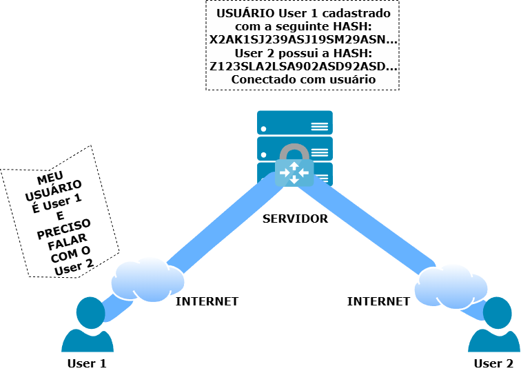
Uma vez estabelecida a conexão, todas as mensagens transitam exclusivamente pelo servidor. É importante ressaltar que toda a comunicação é criptografada, garantindo que os dados não sejam armazenados durante a transferência. O servidor atua como um transportador ágil e seguro, encaminhando as informações diretamente para o destinatário.
Ao final da sessão, a aplicação informa ao servidor sobre o encerramento da comunicação. Os dados do usuário, incluindo o hash do ID, são mantidos no banco de dados Redis enquanto o cliente estiver ativo. Eles são excluídos apenas quando o usuário se desconecta, garantindo a limpeza e a segurança dos dados.
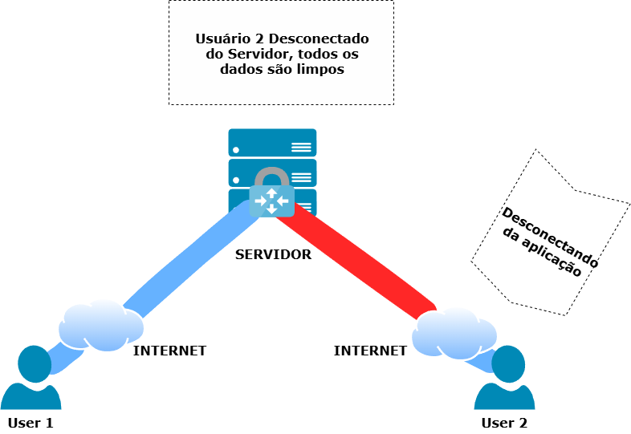
Como parte do processo metodológico, esta fase foi construída com o intuito de antecipar a interação entre o usuário e o sistema. Esta etapa permitiu visualizar e validar, de maneira preliminar, a estruturação dos elementos visuais, fluxos de navegação e funcionalidades básicas, antes da formação definitiva da aplicação.
A prototipagem contribui diretamente para a identificação de melhorias na experiência do usuário, da comunicação entre os integrantes da equipe e como ferramenta de análise das necessidades práticas do projeto. A partir dessa ambientação visual, foi possível ajustar funcionalidades e alinhar as decisões de design às metas de confiabilidade e usabilidade do sistema. Este levantamento está paralelo com os princípios da metodologia ágil, ao unir interações rápidas e feedback contínuo, promovendo um processo de desenvolvimento centrado no usuário e tecnicamente fundamentado.
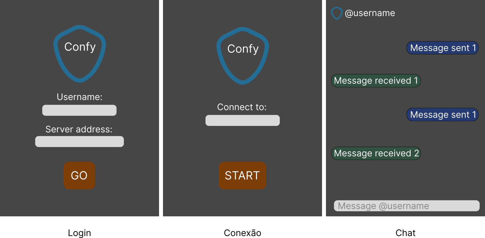
A especificação dos requisitos da aplicação representa uma etapa essencial no planejamento e desenvolvimento de sistemas, especialmente em projetos que envolvem múltiplas camadas de interação e preocupação com segurança, como o proposto nesta aplicação.
A definição clara e antecipada desses elementos contribui para a organização do desenvolvimento, evitando ambiguidades e mudanças frequentes de escopo. Além disso, serve como base para a validação da aplicação, garantindo que os objetivos propostos sejam efetivamente alcançados. Dessa forma, os requisitos e os casos de uso funcionam como um guia técnico e conceitual, capaz de alinhar a implementação com as reais necessidades dos usuários.
Os requisitos funcionais descrevem as ações que o sistema deve ser capaz de realizar. Já os casos de uso têm o papel de ilustrar, de forma prática e contextualizada, como essas funcionalidades serão acionadas pelos usuários em diferentes cenários, auxiliando na visualização do comportamento esperado do sistema.
Os requisitos funcionais descritos na Tabela [table:requisitos_funcionais] têm o objetivo de especificar as funcionalidades que a aplicação proposta deve oferecer.
Desta forma, os requisitos funcionais da aplicação foram definidos e especificados como mostra a tabela a seguir.
Foi elaborado um conjunto de casos de uso do sistema, demonstrado na Tabela [table:casos_de_uso], com o objetivo de centrar os requisitos funcionais descritos na Tabela [table:requisitos_funcionais].
Para manter um ambiente organizado entre todos os participantes do projeto e garantir um bom fluxo de trabalho, a equipe concordou em utilizar uma metodologia ágil. Metodologias ágeis são um grupo de abordagens iterativas e incrementais focadas na colaboração, que têm tido um aumento de popularidade nos últimos anos. A Capterra13 afirma que 71% das organizações relatam utilizar abordagens ágeis.
O Scrumban é um híbrido entre dois frameworks ágeis que combina a estrutura do Scrum com o sistema flexível do Kanban. Originalmente, o Scrumban foi projetado para ajudar as equipes a migrar do Kanban para o Scrum. No entanto, à medida que as equipes perceberam a flexibilidade e a capacidade de entregar continuamente usando esse método, decidiram mantê-lo, aumentando assim sua popularidade.
Do Scrum, usaremos funções, organização de backlogs, revisões regulares e perspectivas. Já do Kanban, usaremos o quadro visual, conforme ilustrado abaixo, um sistema de tarefas baseado em pulls e fluxo de código contínuo.
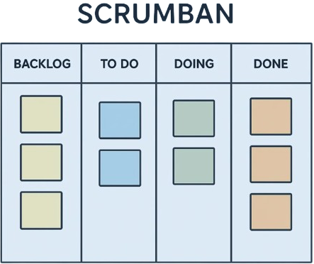
O quadro é dividido em colunas que podem ser adaptadas às nossas necessidades. Mas normalmente são utilizadas três:
To do: Tarefas pendentes.
Doing: Tarefas em andamento.
Done: Tarefas concluídas.
A seguir, apresenta-se uma demonstração do quadro de atividades do projeto, gerenciado por meio da plataforma GitHub Projects14. Essa ferramenta foi selecionada por sua capacidade de integração com issues e pull requests, o que permite acompanhar o andamento das tarefas de maneira estruturada e eficiente, contribuindo significativamente para o planejamento e a organização das atividades do grupo ao longo do desenvolvimento do projeto.
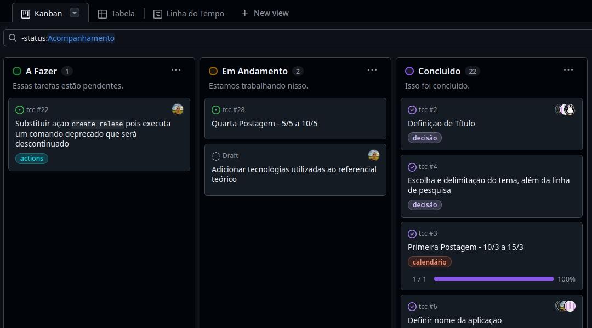
A adoção do Scrumban neste projeto visa equilibrar a disciplina e organização oferecidas pelo Scrum com a flexibilidade e fluidez do Kanban, proporcionando um ambiente de desenvolvimento mais adaptável e visualmente claro. Essa abordagem facilita a priorização e o acompanhamento das tarefas, promove a entrega contínua de funcionalidades e permite rápidas adaptações às mudanças de escopo, o que é especialmente útil em projetos acadêmicos com tempo limitado e objetivos bem definidos. Com o uso combinado dessas práticas ágeis, espera-se uma melhor gestão do fluxo de trabalho, maior transparência nas etapas de desenvolvimento e um aumento na eficiência da equipe durante toda a execução do projeto.
Este capítulo explora o processo de criação do sistema de comunicação com criptografia de ponta a ponta, abrangendo desde a estruturação do ambiente técnico até os procedimentos metodológicos aplicados durante a implementação. Apresentam-se as problemáticas identificadas no curso do desenvolvimento e as medidas adotadas para resolvê-las, complementado por uma visão ampla das funcionalidades implementadas e das ferramentas tecnológicas selecionadas para o projeto.
A necessidade de desenvolver um sistema de comunicação verdadeiramente seguro emerge da análise dos problemas identificados no contexto atual da comunicação digital. Conforme evidenciado no levantamento bibliográfico apresentado no capítulo 2, os sistemas convencionais de mensagens instantâneas frequentemente falham em garantir a privacidade absoluta dos usuários, seja por questões arquitetônicas ou por modelos de negócio que dependem da análise de dados.
O desenvolvimento da solução foi orientado pela necessidade de criar um sistema de comunicação seguro que garantisse a privacidade das mensagens sem depender de infraestruturas centralizadas de terceiros. A implementação resultou em dois componentes principais: um servidor intermediário para roteamento de conexões e uma aplicação cliente desktop para interface com o usuário.
O sistema desenvolvido endereça especificamente os seguintes aspectos identificados na análise do problema:
Eliminação de pontos centrais de acesso ao conteúdo das mensagens;
Implementação de criptografia robusta no lado cliente;
Simplificação da experiência do usuário para adoção por não-especialistas;
Transparência através de código fonte aberto para auditoria.
O processo de planejamento inicial do projeto foi marcado por desafios significativos, especialmente na escolha das funcionalidades a serem incorporadas, dada a vasta gama de recursos disponíveis no mercado. Essa etapa crítica de definição de escopo foi fundamental para direcionar o desenvolvimento e garantir um caminho claro para a execução. Para prototipar as ideias e testar conceitos de interface e funcionalidade, optou-se pelo uso da biblioteca Tkinter15 para a criação do frontend, permitindo uma visualização rápida da interface gráfica da aplicação e seguir com os testes de funcionalidade das mensagens.
Concomitantemente, a segurança foi um pilar central desde o início. A implementação do backend focou em garantir a confidencialidade das comunicações. Para isso, foi utilizada a biblioteca Cryptography, com ênfase na implementação do algoritmo de criptografia RSA, um método de criptografia assimétrica. Essa abordagem manual de criptografia, em vez de depender de protocolos de segurança de transporte como o HTTPS, oferece maior controle sobre a gestão de chaves e o processo de autenticação, adaptando-se perfeitamente aos requisitos específicos do nosso sistema e garantindo uma comunicação segura e privada entre os usuários, conquanto que a nossa aplicação transmite as mensagens de ponto a ponto reforça a transparência para o servidor, cujo a função é apenas entregar as mensagens de um lado para o outro.
O desenvolvimento da aplicação foi um processo colaborativo e estruturado. Para garantir o progresso contínuo e a coesão da equipe, foram realizadas reuniões semanais. Nesses encontros, discutimos os desafios e progressos, além de dividir as tarefas entre os integrantes, o que permitiu um fluxo de trabalho eficiente e a construção simultânea de diferentes componentes do sistema.
A partir dos protótipos iniciais criados com Tkinter, que nos ajudaram a validar as ideias de interface, tomamos a decisão de migrar para uma ferramenta mais robusta e moderna. A escolha final foi a biblioteca PySide616, que oferece funcionalidades mais avançadas para a construção de uma interface gráfica completa e visualmente agradável. Essa transição foi fundamental para elevar a qualidade do produto final, garantindo um design mais polido e uma experiência de usuário aprimorada, alinhada com as expectativas de uma aplicação de comunicação contemporânea.
Como foi explicado na contextualização do projeto, o desenvolvimento seguiu a metodologia Scrumban, que combina elementos do Scrum e do Kanban, muitas vezes referenciada por profissionais como uma abordagem híbrida que aproveita os benefícios de ambos os frameworks. Portanto, o desenvolvimento da aplicação foi dividido em sprints, houve um acordo entre a equipe sobre a flexibilidade das mesmas, visto que todos os envolvidos teriam que alinhar seus horários para a conclusão do projeto, ponderando entre sua vida acadêmica e profissional, o que acarretou em reuniões semanais mais dinâmicas, mas não em menor desempenho ou qualidade, assim, possibilitando manter uma cadência regular sem comprometer a qualidade das entregas como sugerido pelo framework Scrum.
Como o uso do Kanban também estava presente, para cada sprint ser iniciada havia requisitos claros: as atividades deveriam ser puxadas conforme sua prioridade e importância para o sistema de comunicação segura, portanto, com base na relevância dos componentes, tendo como foco inicial a conclusão dos módulos de criptografia e comunicação básica. Logo que a aplicação atingiu os requisitos mínimos de segurança esperados, com a implementação completa da criptografia RSA e do servidor de mensagens, foi possível realizar testes internos entre os membros da equipe, a fim de obter feedbacks sobre a usabilidade e eficácia do sistema.
O fluxo de trabalho seguiu uma estrutura baseada em quadro Kanban adaptado para as necessidades do projeto, com as seguintes colunas principais:
A Fazer: Tarefas priorizadas e prontas para desenvolvimento;
Em Andamento: Atividades em execução pelos membros da equipe;
Em Teste: Componentes em fase de revisão e testes;
Concluído: Funcionalidades concluídas e integradas.
As reuniões semanais estruturaram-se em torno dos seguintes elementos:
Sprint Review: Apresentação dos progressos alcançados na semana anterior, com demonstrações práticas das funcionalidades implementadas, especialmente relacionadas aos avanços na criptografia e interface gráfica.
Identificação de Impedimentos: Discussão colaborativa dos desafios técnicos encontrados, particularmente aqueles relacionados à integração entre os componentes de segurança, servidor e cliente.
Planejamento da Próxima Sprint: Seleção das tarefas prioritárias do backlog, considerando as dependências entre componentes e a disponibilidade dos membros da equipe.
Retrospectiva: Avaliação do processo de desenvolvimento, identificando oportunidades de melhoria na metodologia aplicada e nos fluxos de comunicação da equipe.
O projeto exigiu algumas adaptações específicas da metodologia Scrumban para atender às necessidades particulares do desenvolvimento de um sistema de comunicação segura. As sprints mantiveram duração de uma semana, mas com flexibilidade para estender discussões técnicas quando necessário, especialmente durante decisões críticas sobre a arquitetura de segurança e implementação dos protocolos de criptografia. Esta flexibilidade temporal mostrou-se essencial para garantir que questões complexas relacionadas à segurança fossem adequadamente discutidas e resolvidas.
O backlog foi constantemente refinado para refletir as descobertas técnicas e os requisitos emergentes do sistema de criptografia, permitindo ajustes de prioridade sem comprometer o cronograma geral. Essa priorização dinâmica revelou-se fundamental durante a transição de Tkinter para PySide6 e nas decisões sobre a implementação manual da criptografia RSA, onde novas necessidades técnicas emergiram e demandaram reajustes nas prioridades estabelecidas.
A abordagem Kanban facilitou a integração contínua dos componentes desenvolvidos paralelamente, essencial para um sistema onde back-end, front-end e criptografia precisavam funcionar harmoniosamente. O fluxo contínuo de trabalho permitiu que ajustes em um componente fossem rapidamente comunicados e integrados aos demais, mantendo a consistência arquitetural e evitando retrabalhos significativos.
Para o gerenciamento eficaz do projeto, foi utilizado o GitHub Projects como plataforma principal para organização e acompanhamento das atividades. Esta ferramenta se integra diretamente com as issues e pull requests do repositório, proporcionando uma visão unificada do progresso do desenvolvimento e facilitando o controle das entregas.
Um dos recursos mais valiosos para a gestão ágil do projeto foi o gráfico de Burn Up, que demonstra o progresso das atividades ao longo do tempo, permitindo visualizar tanto o escopo total do projeto quanto o trabalho já concluído. Este gráfico foi fundamental para identificar tendências de produtividade, mudanças de escopo e possíveis gargalos no desenvolvimento, especialmente durante as fases críticas de implementação da criptografia e integração dos componentes.
Abaixo é possível visualizar o gráfico de Burn Up do projeto, que ilustra a evolução das entregas e o cumprimento dos marcos estabelecidos durante o desenvolvimento da aplicação de comunicação segura:
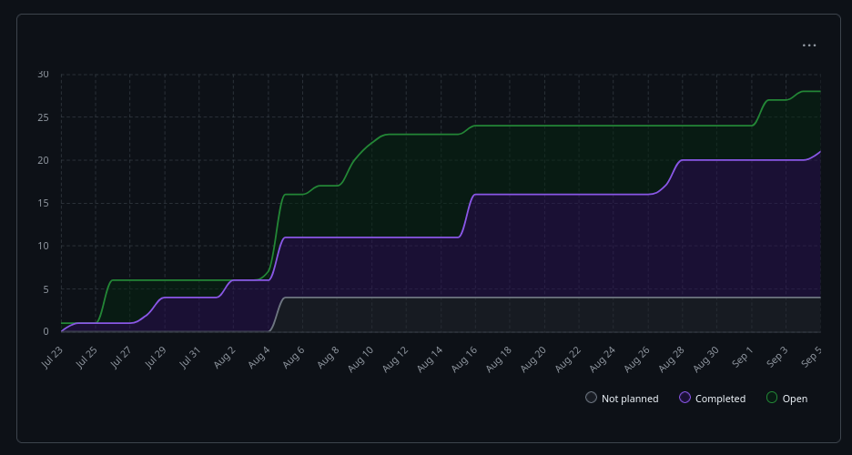
O gráfico evidencia os períodos de maior intensidade no desenvolvimento, particularmente durante a implementação dos módulos de segurança e a transição entre as tecnologias de interface gráfica. As variações na curva refletem tanto as adaptações metodológicas necessárias quanto os desafios técnicos específicos encontrados no desenvolvimento de um sistema de comunicação com criptografia de ponta a ponta.
A arquitetura desenvolvida seguiu o modelo cliente-servidor com criptografia de ponta a ponta, onde o servidor atua exclusivamente como facilitador de conexões sem acesso ao conteúdo das mensagens, este por sua vez pode ser hospedado por usuários voluntários e não necessariamente pelos desenvolvedores ou mantenedores.
Para garantir a qualidade, segurança e manutenibilidade do código desenvolvido, foram integradas ao processo de desenvolvimento diversas ferramentas especializadas que automatizaram verificações e padronizações essenciais para um projeto de comunicação segura. Essas ferramentas foram fundamentais para manter a consistência do código entre os membros da equipe e assegurar que os padrões de segurança fossem rigorosamente seguidos.
O Ruff17 foi utilizado como linter principal do projeto, responsável por identificar problemas de estilo, possíveis bugs e violações das convenções de código Python (PEP 818). Esta ferramenta, conhecida por sua velocidade e abrangência, permitiu que a equipe mantivesse um código limpo e consistente ao longo de todo o desenvolvimento, detectando automaticamente problemas que poderiam comprometer a legibilidade ou a manutenção futura do sistema.
Para a análise de segurança do código, foi implementado o Bandit19, uma ferramenta especializada em identificar vulnerabilidades comuns em código Python. Considerando que o projeto envolve implementação de criptografia e manipulação de dados sensíveis, o Bandit foi essencial para detectar potenciais falhas de segurança, uso inadequado de funções criptográficas e outras práticas que poderiam comprometer a integridade do sistema de comunicação segura.
A complexidade do código foi monitorada através do Radon20, ferramenta que calcula métricas como complexidade ciclomática, índice de manutenibilidade e outras medidas quantitativas da qualidade do código. Esta análise foi particularmente importante para os módulos de criptografia e gerenciamento de conexões, onde a complexidade algorítmica poderia impactar tanto a performance quanto a facilidade de manutenção do sistema.
O Taskipy21 serviu como gerenciador de tarefas do projeto, permitindo a definição de comandos personalizados para execução automatizada de rotinas comuns como testes, linting, análise de segurança e deploy. Esta ferramenta simplificou significativamente o fluxo de trabalho da equipe, padronizando os comandos utilizados e garantindo que todos os membros executassem as mesmas verificações antes de cada commit.
Por fim, o Pytest22 foi adotado como framework de testes, proporcionando uma estrutura robusta para a criação e execução de testes unitários e de integração. A implementação de testes automatizados foi crucial para validar o funcionamento correto dos algoritmos de criptografia, da comunicação entre cliente e servidor, e da integridade das mensagens transmitidas, garantindo que modificações no código não introduzirem regressões no sistema.
A integração dessas ferramentas no pipeline de desenvolvimento criou um ambiente onde a qualidade e segurança do código eram continuamente monitoradas, permitindo que a equipe se mantivesse focada na implementação das funcionalidades principais com a confiança de que aspectos críticos como segurança e manutenibilidade estavam sendo adequadamente controlados.
O back-end é responsável por aceitar as conexões Websocket vindas dos clientes (APPs) compatíveis com o servidor e realizar o encaminhamento de mensagens entre os usuários, garantindo a confidencialidade das comunicações, de modo que uma mensagem recebida é encaminhada diretamente para o usuário de destino sem ter seu conteúdo acessado pelo servidor. Além disso, o servidor fornece uma interface intercambiável entre clientes, podendo ser desenvolvidos diversos aplicativos clientes diferentes entre si, porém compatíveis com o mesmo servidor.
O back-end foi desenvolvido totalmente em Python utilizando o FastAPI (framework que auxilia no desenvolvimento de APIs web), o qual, ao ser executado, fornece uma API acessível através de uma URL específica para aplicativos clientes acessarem suas funcionalidades. A estrutura do projeto do servidor ficou da seguinte forma:
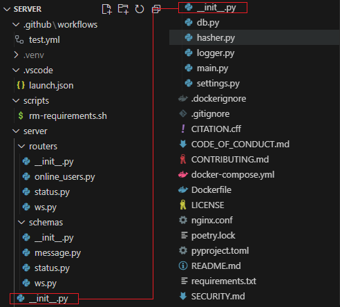
Outro ponto importante é que neste momento já foram adicionadas algumas dependências ao projeto que facilitaram o desenvolvimento, entre elas, é válido destacar as seguintes:
psutil23: Biblioteca utilizada para obter informações sobre os recursos do hardware no qual o servidor está sendo executado;
redis24: Biblioteca para gerenciamento de banco de dados de cache.
No diretório routers ficam localizadas as definições das regras de negócio do servidor, a maneira como ele recebe a mensagens e as retransmite para os demais usuários, na pasta routers temos os seguintes arquivos:
online_users.py: Define um endpoint
HTTP
que verifica se um determinado nome de usuário está disponível para
uso, ou seja, se não há nenhum usuário online no momento que esteja
utilizando este nome de usuário. Caso o nome de usuário esteja
disponível a resposta
HTTP
terá um código de status 200, caso contrário terá um código de
status 409. Dessa forma, o código garante a integridade dos nomes de
usuário ativos, evitando duplicidade e eventuais erros devido a
conflitos de nomes de usuários;
status.py: Define um endpoint
HTTP
que retorna informações sobre o status dos recursos da máquina em
que o servidor está sendo executado, como o uso da
CPU, frequência dos processadores, uso da memória, entre outras
coisas;
ws.py: Módulo principal do servidor, onde é definido o
endpoint Websocket que trata todas as comunicações que chegam e saem
do servidor. A rota definida aqui realiza tarefas cruciais para o
funcionamento de todo o sistema, como armazenamento de conexões,
usuários online, túneis de comunicação ativos, retransmissão de
mensagens, entre outras tarefas.
Para realizar a validação de dados que entram e saem do servidor por meio de requisições em seus endpoints HTTP utilizamos a biblioteca Pydantic que oferece modelos de validação robustos e que se integram perfeitamente com APIs JSON, esses modelos são chamados de schemas.
O diretório schemas tem como finalidade, centralizar e
gerenciar os modelos de dados utilizados pelos
endpoints
HTTP
do servidor. Ela atua como um acordo técnico padronizado sobre os tipos
de dados que devem ser enviados e/ou recebidos entre quem realiza uma
requisição a determinado endpoint
HTTP
e o servidor, garantindo validação, consistência, segurança e
documentação automática por meio do FastAPI.
Nos apêndices, o trecho de código em "", define alguns dos schemas de dados usados pelo FastAPI com o Pydantic no servidor. No fim deste arquivo, na seção de Apêndice, os schemas desenvolvidos até este ponto estão disponíveis.
No sistema do servidor, existe a necessidade de controlar quais usuários estão conectados em tempo real. Esse controle é fundamental para evitar que o mesmo usuário estabeleça múltiplas sessões simultâneas e para possibilitar a correta entrega de mensagens entre os pares conectados. Como essas informações são voláteis e temporárias, válidas apenas enquanto a conexão permanece ativa, não se justifica armazená-las em um banco de dados relacional tradicional, que implicaria em maior consumo de recursos e complexidade desnecessária.
Diante disso, optamos pelo uso do Redis, um banco de dados NoSQL em memória, projetado para lidar com informações temporárias de forma rápida, leve e eficiente. Sua estrutura baseada em conjuntos permite verificar de forma imediata se um usuário está online, além de simplificar as operações de inserção e remoção. Dessa forma, o Redis atendeu plenamente aos requisitos de baixa latência, simplicidade e desempenho em tempo real exigidos pelo sistema.
No trecho de código presente nos apêndices na seção "" é criada uma conexão assíncrona global com o Redis, usando configurações externas. Isso permite que qualquer parte do sistema, como a autenticação, o Websocket, o cache, utilize o mesmo cliente para ler e gravar dados.
O cliente Redis é utilizado principalmente no endpoint Websocket da aplicação, para realizar o registro e exclusão de usuários que estão online ou que se desconectaram, respectivamente. Os IDs dos usuários não são salvos em texto claro no Redis, mas sim um hash dos IDs, para garantir uma maior privacidade dos usuários. Na seção de Apêndice, em “”, está disponível o código da função que converte qualquer ID de usuário em um hash SHA-256, hash esse que será usado pelo servidor para armazenamento e identificação do usuário até o fim de sua conexão.
No módulo settings utilizamos uma funcionalidade do Pydantic que
possibilita o carregamento automático das variáveis de ambiente
presentes em um arquivo .env, essas variáveis são
necessárias como configurações do Redis, sendo elas o endereço do Redis
e a porta em que está sendo executado. O código que obtém os valores das
variáveis de ambiente está disponível nos apêndices na seção "".
A execução do servidor está configurada podendo ser executada via docker compose, garantindo que todos os serviços dos quais o servidor depende sejam iniciados simultaneamente. Os três containers iniciados via docker compose são os seguintes:
Redis - como banco de dados em memória;
Servidor de aplicação FastAPI;
Servidor web Nginx25 - atua como proxy reverso, recebendo as requisições externas e encaminhando-as para o servidor FastAPI.
O arquivo docker-compose.yml define três containers que
compõem a arquitetura da aplicação. O primeiro é o server,
responsável por executar a aplicação FastAPI. Esse container é
construído a partir do código-fonte local, recebe as variáveis de
ambiente necessárias para se conectar ao Redis e está configurado para
reiniciar automaticamente em caso de falhas. Além disso, ele monta o
diretório do projeto dentro do container, permitindo que o código seja
atualizado sem necessidade de reconstrução da imagem, e estabelece
dependência direta do serviço Redis, garantindo que o banco de dados em
memória esteja disponível antes de sua inicialização.
O segundo container é o web, que executa o servidor Nginx na
função de proxy reverso. Ele expõe a aplicação externamente através da
porta 9000 do host, redirecionando as requisições para o
servidor FastAPI. O Nginx é configurado por meio de um arquivo de
configuração customizado chamado de nginx.conf, o que
possibilita definir regras específicas para o encaminhamento das
requisições e otimizações de desempenho. Assim como o servidor de
aplicação, esse container também está configurado para reiniciar
automaticamente e depende do serviço server, de forma que
só inicia após a aplicação estar em funcionamento.
O terceiro container é o redis, que fornece o banco de dados em
memória utilizado pela aplicação para armazenamento temporário e
operações de alta performance. Ele é baseado na imagem oficial do Redis
em sua versão otimizada alpine, expõe a porta 6379 para
permitir a comunicação entre os serviços e mantém a persistência dos
dados em um volume chamado redis_data, evitando perda de
informações em reinicializações. Esse container também está configurado
para reiniciar automaticamente, assegurando sua disponibilidade contínua
durante a execução do sistema.
Antes de iniciar o desenvolvimento do aplicativo com interface gráfica, foi necessário criar um cliente de linha de comando CLI (CLI) para testar e validar o funcionamento do servidor e dos protocolos de comunicação implementados. Esta abordagem seguiu as melhores práticas de desenvolvimento de software, onde componentes fundamentais são testados isoladamente antes da criação de interfaces mais complexas.
O desenvolvimento do cliente CLI teve como objetivo principal verificar a integridade da comunicação Websocket, a eficácia dos algoritmos de criptografia implementados e a robustez do procedimento de troca de chaves desenvolvido. Esta ferramenta de teste permitiu que a equipe identificasse e corrigisse problemas na arquitetura do sistema antes de investir tempo no desenvolvimento da interface gráfica, economizando recursos e garantindo uma base sólida para o aplicativo final.
O cliente CLI foi desenvolvido completamente em Python, utilizando bibliotecas especializadas para cada aspecto da funcionalidade. A biblioteca Typer26 foi escolhida para criar a interface de linha de comando, proporcionando uma experiência de usuário intuitiva mesmo em ambiente terminal. Para a comunicação Websocket, foi utilizada a biblioteca websockets27, que oferece suporte nativo aos protocolos assíncronos necessários para a comunicação em tempo real.
A interface de entrada de dados foi aprimorada através da biblioteca prompt-toolkit28, que adiciona funcionalidades avançadas como histórico de comandos, auto-completar e sugestões automáticas. Esta escolha foi fundamental para facilitar os testes repetitivos durante o desenvolvimento, permitindo que os desenvolvedores reutilizassem comandos anteriores e navegassem facilmente pelo histórico de interações.
Para a exibição de informações no terminal, foi implementada a biblioteca Rich29, que proporciona formatação colorida e estruturada das mensagens. Esta funcionalidade foi essencial para distinguir visualmente entre diferentes tipos de mensagens: mensagens do sistema em amarelo, mensagens criptografadas recebidas em verde, mensagens em texto puro em vermelho, e informações de depuração em azul.
O cliente
CLI
implementa um protocolo completo de comunicação segura que inicia com o
estabelecimento da conexão Websocket utilizando um
URI
estruturado que inclui os identificadores do usuário remetente e
destinatário, seguindo o formato /ws/user_id@recipient_id. Uma vez conectado ao servidor, o sistema aguarda que ambos os
participantes da conversação estejam online para iniciar
automaticamente o processo de handshake de segurança.
Assim que o destinatário se conecta, o cliente automaticamente inicia a troca de chaves públicas RSA, onde cada participante envia sua chave pública serializada em formato base6430, utilizando um prefixo específico para distinguir este tipo de mensagem das demais comunicações. Esta etapa é crucial para estabelecer a base criptográfica que permitirá a comunicação segura subsequente.
Após a troca bem-sucedida das chaves públicas RSA, um dos clientes, determinado pela comparação lexicográfica dos IDs dos usuários, assume a responsabilidade de gerar uma chave AES simétrica. Esta chave é então criptografada com a chave pública RSA do destinatário e enviada de forma segura através do canal Websocket. Esta abordagem híbrida combina a segurança da criptografia assimétrica RSA com a eficiência da criptografia simétrica AES para as mensagens subsequentes, otimizando tanto a segurança quanto o desempenho da comunicação.
Uma vez estabelecida a chave AES compartilhada entre os dois participantes, todas as mensagens de usuário são automaticamente criptografadas usando AES antes do envio e descriptografadas no momento do recebimento. Este processo é completamente transparente para o usuário, que simplesmente digita suas mensagens em texto plano, enquanto o sistema se encarrega de toda a complexidade criptográfica nos bastidores, proporcionando comunicação de ponta a ponta verdadeiramente segura.
Para organizar e processar adequadamente os diferentes tipos de mensagens trafegadas pelo sistema, foi implementado um sistema de prefixos que permite a identificação imediata do conteúdo e do tratamento necessário para cada mensagem recebida. As mensagens de controle do servidor, como notificações de conexão e desconexão de usuários, são identificadas pelo prefixo de sistema, permitindo que o cliente exiba informações relevantes sobre o estado da conexão. Durante o handshake inicial, as mensagens contendo chaves públicas RSA são marcadas com um prefixo específico de troca de chaves, enquanto a transmissão da chave AES criptografada utiliza seu próprio identificador. Por fim, todas as mensagens de usuário criptografadas com a chave AES estabelecida recebem um prefixo que indica ao receptor a necessidade de descriptografia antes da exibição.
O cliente CLI permitiu a realização de testes abrangentes que validaram aspectos críticos do sistema, incluindo a capacidade do servidor de gerenciar múltiplas conexões simultâneas, o funcionamento correto dos algoritmos de criptografia RSA e AES, a robustez do sistema em cenários de falha de rede e desconexões abruptas, além do comportamento adequado com múltiplos usuários enviando mensagens simultaneamente. Esses testes foram fundamentais para identificar e corrigir problemas relacionados ao gerenciamento de estado assíncrono, tratamento de exceções e sincronização entre processos, garantindo que o protocolo desenvolvido fosse robusto o suficiente para suportar a implementação na interface gráfica do aplicativo final.
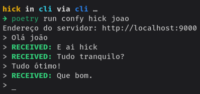
A validação da criptografia das mensagens e do intercâmbio de chaves no início da conexão foi realizada com o auxílio do Wireshark31, um software amplamente reconhecido para análise de tráfego de rede. Essa ferramenta nos permitiu visualizar a formação dos pacotes de rede, baseando-se nas camadas do modelo OSI32. Assim, conseguimos confirmar a troca inicial das chaves públicas RSA e a chave AES entre os hosts até o momento completo da troca de mensagens estarem criptografadas, conforme demonstrado na imagem.
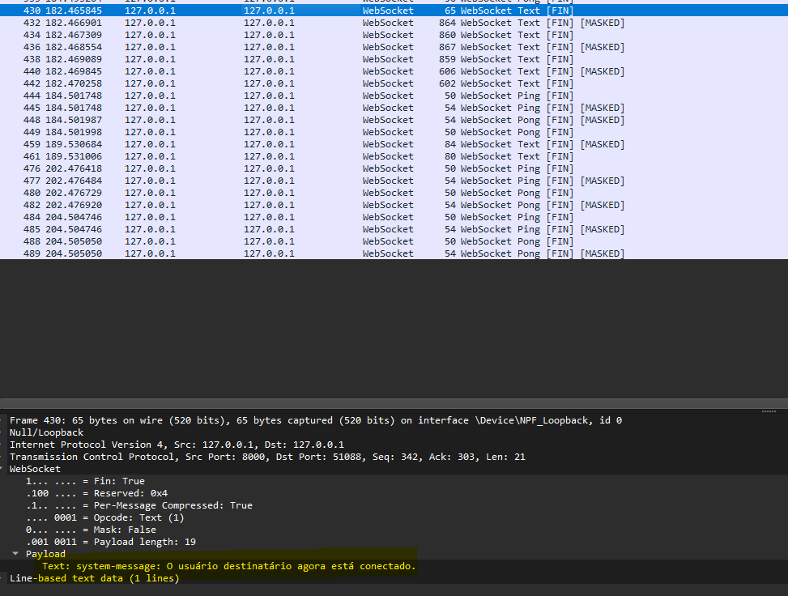
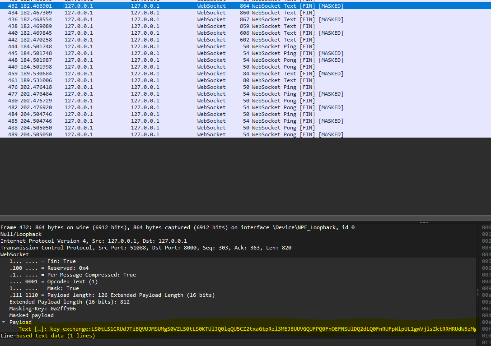
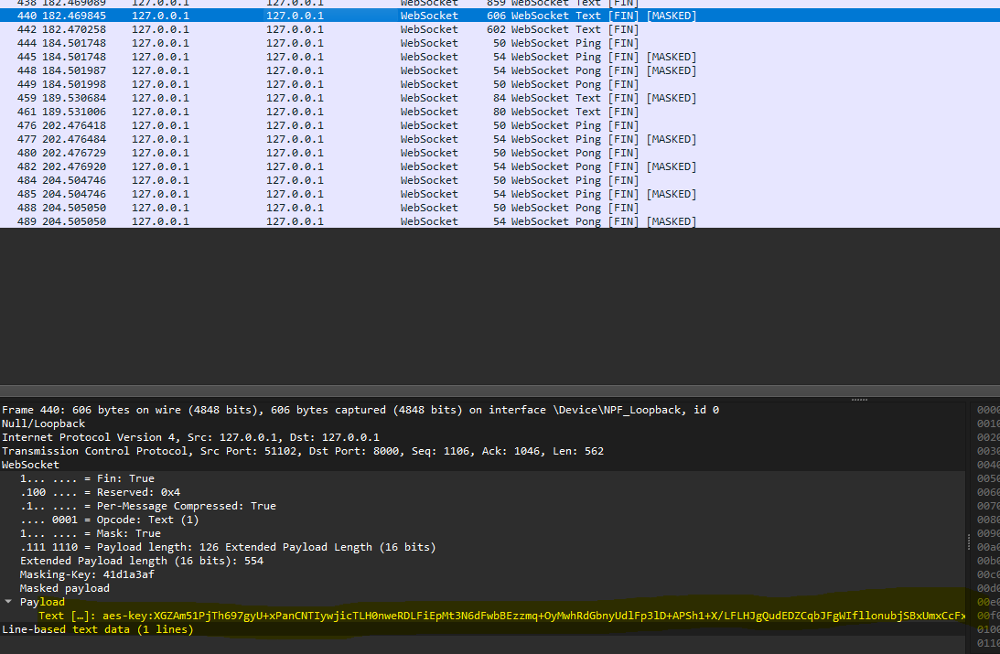
O processo de troca dos prefixos é visualizado no payload do frame de dados. Isso ocorre porque o protocolo Websocket utiliza o opcode Text para indicar que o conteúdo do frame é uma mensagem de texto, permitindo a transmissão de dados como as nossas troca de prefixos configuradas previamente. Além disso, é possível observar os frames de controle PING e PONG33, que são nativos do protocolo e têm a função de verificar a atividade e a disponibilidade dos hosts, garantindo que a conexão permaneça estável.
Para prover uma interface amigável e de simples utilização para os usuários finais do sistema, foi desenvolvido um aplicativo cliente GUI (GUI) de aparência moderna por meio da biblioteca PySide6. Assim como o back-end, o APP cliente final também foi desenvolvido totalmente em Python. A estrutura do projeto do APP ficou da seguinte forma:
O aplicativo integra múltiplas funcionalidades essenciais para um sistema de comunicação segura, incluindo o gerenciamento de chaves criptográficas RSA, estabelecimento e manutenção de conexões Websocket com o servidor, criptografia e descriptografia de mensagens em tempo real, e uma interface de chat intuitiva que oculta a complexidade dos processos de segurança subjacentes. A estrutura do projeto do APP ficou da seguinte forma:
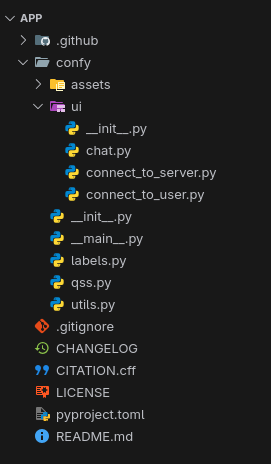
A experiência do usuário foi priorizada desde o início do desenvolvimento, com foco na simplicidade de uso e na transparência dos processos de segurança. O aplicativo apresenta uma interface limpa e organizada, onde os usuários podem facilmente iniciar conversas, visualizar o status de suas conexões e receber feedback visual sobre o estado da criptografia de suas mensagens, tudo isso sem precisar compreender os aspectos técnicos da implementação RSA ou dos protocolos de comunicação utilizados.
O PySide6 provê um conjunto de elementos de UI que auxiliam no desenvolvimentos de interfaces de usuário no estilo desktop, dentre eles o principal utilizado no projeto foi o QWidget, utilizado para criar cada janela. O APP em questão conta com três janelas ao todo, uma janela para inserir o nome de usuário de quem está se conectando e o endereço do servidor utilizado para a comunicação, uma segunda janela para inserir o nome de usuário de destinatário da comunicação e por fim a tela de conversação. Veja abaixo as respectivas telas em detalhes.
A primeira tela solicita o nome de usuário que se deseja utilizar, e o endereço do servidor que será usado para a comunicação. Vale ressaltar que o remetente e o destinatário devem utilizar o mesmo servidor para estabelecer uma conexão, caso ambos os usuários se conectem a servidores distintos entre si estes não conseguiram se comunicar.
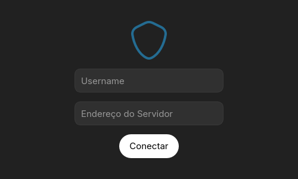
O endereço de servidor fornecido na primeira tela deve conter o
protocolo, se é
HTTP
ou
HTTPS, o domínio do servidor e a porta em que está sendo executado, um
endereço de exemplo poderia ser
https://meuservidor.com:9000, onde https é o
protocolo, meuservidor.com o domínio do servidor e 9000 a
porta em que ele está sendo executado. Por fim, caso o nome de usuário
inserido já esteja ou o endereço do servidor não esteja acessível ou até
mesmo caso os campos sejam deixados em branco, uma janela informando o
erro será exibida.
Após clicar em conectar na primeira tela do APP, o usuário será encaminhado para a segunda tela, em que será solicitado que seja inserido o nome de usuário do destinatário, ou seja, o nome de usuário da pessoa com a qual se deseja conversar.
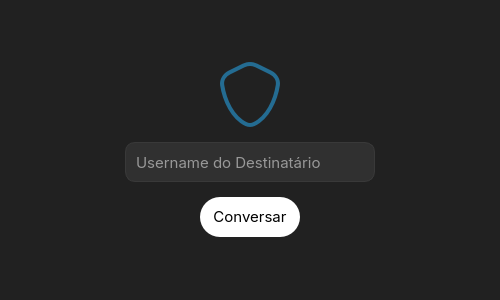
Por fim, ao clicar novamente em conectar o usuário será conectado ao usuário de destino e a comunicação poderá ser iniciada, caso o usuário de destino ainda não esteja conectado, o primeiro usuário deverá aguardar e quando o destinatário será conectado o primeiro usuário será notificado. Assim que os dois usuários estiverem devidamente conectados eles podem dar sequência a conversa como demonstrado na imagem abaixo:
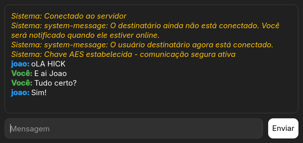
O protocolo de comunicação e criptografia implementado no aplicativo de interface gráfica mantém exatamente a mesma arquitetura e procedimentos validados anteriormente no cliente CLI. Todo o fluxo de estabelecimento de conexão Websocket, handshake de chaves públicas RSA, geração e troca segura de chaves AES, além do sistema de prefixos para classificação de mensagens, foi integralmente preservado na implementação do aplicativo desktop. Esta consistência arquitetural garantiu que a robustez e segurança comprovadas durante os testes com o cliente CLI fossem mantidas na versão final do produto, proporcionando aos usuários finais o mesmo nível de proteção criptográfica em uma interface amigável e intuitiva. A reutilização deste protocolo também permitiu que o foco do desenvolvimento da interface gráfica fosse direcionado exclusivamente para a experiência do usuário e funcionalidades visuais, uma vez que os aspectos críticos de segurança já haviam sido extensivamente testados e validados.
Além disso, como ambas as implementações seguem exatamente o mesmo protocolo de comunicação, existe total interoperabilidade entre os clientes, permitindo que um usuário utilizando o cliente CLI se comunique perfeitamente com outro usuário que esteja usando o aplicativo de interface gráfica, e vice-versa. Esta compatibilidade cruzada demonstra a solidez do protocolo desenvolvido e oferece flexibilidade aos usuários na escolha da interface que melhor se adequa às suas necessidades ou preferências. A reutilização deste protocolo também permitiu que o foco do desenvolvimento da interface gráfica fosse direcionado exclusivamente para a experiência do usuário e funcionalidades visuais, uma vez que os aspectos críticos de segurança já haviam sido extensivamente testados e validados.
A integração e entrega contínua (CI/CD) representa uma das práticas fundamentais do desenvolvimento de software moderno, permitindo a automação de processos de construção, teste e distribuição de aplicações de forma eficiente e confiável. No contexto de aplicações desktop, essas práticas se tornam ainda mais relevantes devido à necessidade de gerar builds específicas para diferentes sistemas operacionais e arquiteturas, garantindo que os usuários finais tenham acesso facilitado às versões mais atualizadas do software sem comprometer a qualidade ou segurança das distribuições.
No projeto do aplicativo desktop oi implementado um pipeline de CI/CD que é acionado sempre que uma nova versão do app for lançada e enviada para o GitHub34, esse pipeline automatiza o processo de build e empacotamento de uma nova versão do app para instaladores nativos para os sistemas operacionais Microsoft Windows e as principais distribuições Linux, entre elas, Ubuntu, Fedora, Arch Linux, entre outras. Após o empacotamento os binários instaladores são anexados à publicação de lançamento da versão no GitHub para que os usuários possam realizar o download dos mesmos. Na imagem abaixo é possível visualizar o status e tempo de execução de cada CI de build dos instaladores via GitHub Actions, incluindo o total de empacotamento de todos os instaladores:
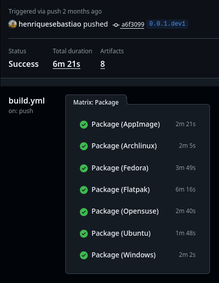
Nos apêndices no final deste arquivo é possível ver o código que define o workflow de build em "”.
from pydantic import BaseModel
class CpuFreq(BaseModel):
current: float
min: float
max: float
class Memory(BaseModel):
total: int
available: int
percent: float
used: int
free: int
active: int
inactive: int
buffers: int
cached: int
shared: int
slab: int
class StatusPerCore(BaseModel):
cpu_frequency: CpuFreq
cpu_percent: float
class StatusSchema(BaseModel):
number_of_cores: int
cpu_frequency: CpuFreq
cpu_percent: float
status_per_core: list[StatusPerCore]
memory: Memoryfrom functools import lru_cache
from pydantic_settings import BaseSettings, SettingsConfigDict
class Settings(BaseSettings):
model_config = SettingsConfigDict(env_file='.env', env_file_encoding='utf-8', extra='ignore')
REDIS_HOST: str = 'localhost'
REDIS_PORT: int = 6379
@lru_cache
def get_settings():
return Settings()import hashlib
def hash_id(user_id: str) -> str:
return hashlib.sha256(user_id.encode('utf-8')).hexdigest()import redis.asyncio as redis
from server.settings import get_settings
settings = get_settings()
redis_client = redis.Redis(
host=settings.REDIS_HOST, port=settings.REDIS_PORT, decode_responses=True
)from fastapi import APIRouter, HTTPException, WebSocket, WebSocketDisconnect, status
from server.db import redis_client
from server.hasher import hash_id
from server.logger import logger
from server.schemas.ws import RecipientAvailabilitySchema
router = APIRouter(prefix='/ws', tags=['WebSocket'])
active_connections: dict[str, WebSocket] = {}
active_tunnels = set()
waiting_for: dict[str, list[str]] = {}
tunnel_users: dict[frozenset, set[str]] = {}
async def cleanup_user_from_redis(user_id: str):
await redis_client.srem('online_users', user_id)
logger.info(f'Usuário {user_id} removido do Redis.')
async def handle_user_disconnect(disconnected_user: str, tunnel_id: frozenset):
if disconnected_user in active_connections:
del active_connections[disconnected_user]
await cleanup_user_from_redis(disconnected_user)
if tunnel_id in tunnel_users:
tunnel_users[tunnel_id].discard(disconnected_user)
remaining_users = tunnel_users[tunnel_id].copy()
for user_id in remaining_users:
if user_id in active_connections:
try:
await active_connections[user_id].send_text(
'system-message: O outro usuário se desconectou.'
)
await active_connections[user_id].close()
del active_connections[user_id]
await cleanup_user_from_redis(user_id)
except Exception as e:
logger.error(f'Erro ao notificar usuário {user_id}: {e}')
if user_id in active_connections:
del active_connections[user_id]
await cleanup_user_from_redis(user_id)
del tunnel_users[tunnel_id]
if tunnel_id in active_tunnels:
active_tunnels.remove(tunnel_id)
if disconnected_user in waiting_for:
del waiting_for[disconnected_user]
for recipient, senders in waiting_for.items():
if disconnected_user in senders:
senders.remove(disconnected_user)
@router.get(
'/check-availability/{recipient_id}',
response_model=RecipientAvailabilitySchema,
summary='Retorna se destinatário já está conectado com algum usuário',
)
async def check_recipient_availability(recipient_id: str):
hashed_recipient = hash_id(recipient_id)
recipient_online = await redis_client.sismember('online_users', hashed_recipient)
if recipient_online and hashed_recipient in active_connections:
for tunnel_id, users in tunnel_users.items():
if hashed_recipient in users and len(users) > 1:
raise HTTPException(
status_code=status.HTTP_423_LOCKED,
detail='Destinatário já está em uma conversa ativa',
)
data = {
'recipient_online': bool(recipient_online),
'message': 'Destinatário disponível para conexão',
}
return data
@router.websocket('/{sender_id}@{recipient_id}')
async def websocket_endpoint(websocket: WebSocket, sender_id: str, recipient_id: str):
sender_id = hash_id(sender_id)
recipient_id = hash_id(recipient_id)
await websocket.accept()
if sender_id == recipient_id:
await websocket.send_text('system-error: Você não pode se conectar com você mesmo.')
await websocket.close()
return
is_online = await redis_client.sismember('online_users', sender_id)
if is_online:
await websocket.send_text(
'system-error: Já há um usuário conectado com o ID que você solicitou.'
)
await websocket.close()
return
if recipient_id in active_connections:
for tunnel_id, users in tunnel_users.items():
if recipient_id in users and len(users) > 1:
await websocket.send_text(
'system-error: O destinatário já está em uma conversa ativa.'
)
await websocket.close()
return
active_connections[sender_id] = websocket
await redis_client.sadd('online_users', sender_id)
tunnel_id = frozenset({sender_id, recipient_id})
active_tunnels.add(tunnel_id)
if tunnel_id not in tunnel_users:
tunnel_users[tunnel_id] = set()
tunnel_users[tunnel_id].add(sender_id)
if recipient_id in active_connections:
tunnel_users[tunnel_id].add(recipient_id)
logger.info(f'Usuário {sender_id} conectado.')
if recipient_id not in active_connections:
waiting_for.setdefault(recipient_id, []).append(sender_id)
await websocket.send_text(
'system-message: O destinatário ainda não está conectado. '
'Você será notificado quando ele estiver online.'
)
if sender_id in waiting_for:
for waiting_sender in waiting_for[sender_id]:
if waiting_sender in active_connections:
await active_connections[waiting_sender].send_text(
'system-message: O usuário destinatário agora está conectado.'
)
tunnel_users[tunnel_id].add(waiting_sender)
del waiting_for[sender_id]
try:
while True:
message = await websocket.receive_text()
if recipient_id in active_connections:
await active_connections[recipient_id].send_text(message)
else:
await websocket.send_text(
'system-message: O outro usuário ainda não está conectado.'
)
except WebSocketDisconnect:
logger.info(f'Usuário {sender_id} desconectado.')
await handle_user_disconnect(sender_id, tunnel_id)name: Build
on:
push:
tags:
- '*'
concurrency:
group: ${{ github.workflow}}-${{ github.ref }}
cancel-in-progress: ${{ github.event_name == 'pull_request' }}
env:
FORCE_COLOR: "1"
defaults:
run:
shell: bash
jobs:
generate_changelog:
runs-on: ubuntu-latest
steps:
- name: Check out repository
uses: actions/checkout@v5
- name: Set up Ruby
uses: ruby/setup-ruby@v1
with:
ruby-version: '3.3'
- name: Install github_changelog_generator
run: gem install github_changelog_generator
- name: Generate Changelog
run: |
git fetch --tags --force
latest_tag=$(git describe --tags `git rev-list --tags --max-count=1`)
github_changelog_generator -u confy-security -p app --since-tag $latest_tag
env:
CHANGELOG_GITHUB_TOKEN: ${{ secrets.CHANGELOG_GITHUB_TOKEN }}
- name: Upload CHANGELOG file
uses: actions/upload-artifact@v4
with:
name: CHANGELOG
path: CHANGELOG.md
build-and-package:
name: Package
runs-on: ${{ matrix.runs-on }}
permissions:
contents: write
packages: write
actions: write
discussions: write
strategy:
fail-fast: false
matrix:
target: [ "Flatpak", "AppImage", "Archlinux", "Ubuntu", "Fedora", "Opensuse", "Windows" ]
include:
- target: "AppImage"
platform: "linux"
output-format: "appimage"
runs-on: "ubuntu-latest"
- target: "Flatpak"
platform: "linux"
output-format: "flatpak"
runs-on: "ubuntu-latest"
- target: "Archlinux"
platform: "linux"
output-format: "system"
runs-on: "ubuntu-latest"
briefcase-args: "--target archlinux"
- target: "Ubuntu"
platform: "linux"
output-format: "system"
runs-on: "ubuntu-latest"
briefcase-args: "--target ubuntu:24.04"
- target: "Fedora"
platform: "linux"
output-format: "system"
runs-on: "ubuntu-latest"
briefcase-args: "--target fedora:40"
- target: "Opensuse"
platform: "linux"
output-format: "system"
runs-on: "ubuntu-latest"
briefcase-args: "--target opensuse/tumbleweed"
- target: "Windows"
platform: "windows"
output-format: "app"
runs-on: "windows-latest"
steps:
- name: Checkout
uses: actions/checkout@v5
- name: Setup Python
uses: actions/setup-python@v5
with:
python-version: "3.13.7"
- name: Install flatpak
if: matrix.target == 'Flatpak'
run: sudo apt install flatpak flatpak-builder
- name: Install Briefcase
run: |
python -m pip install -U pip setuptools wheel
python -m pip install briefcase
- name: Build App
run: |
briefcase build \
${{ matrix.platform || matrix.target }} \
${{ matrix.output-format }} \
--test --no-input --log \
${{ matrix.briefcase-args }}
- name: Package App
run: |
briefcase package \
${{ matrix.platform || matrix.target }} \
${{ matrix.output-format }} \
--update --adhoc-sign --no-input --log \
${{ matrix.briefcase-args }}
- name: Upload App
uses: actions/upload-artifact@v4
with:
name: confy-${{ matrix.target }}
path: dist
if-no-files-found: error
- name: Upload Log
if: failure()
uses: actions/upload-artifact@v4
with:
name: Log-Failure-${{ matrix.target }}
path: logs/*
- name: Download CHANGELOG artifact
uses: actions/download-artifact@v5
with:
name: CHANGELOG
path: .
- name: Release
uses: softprops/action-gh-release@v2
if: startsWith(github.ref, 'refs/tags/')
with:
prerelease: true # Definir como falso se não for uma versão de pré-lançamento
body_path: ./CHANGELOG.md
files: |
dist/*import asyncio
import base64
import websockets
from confy_addons.encryption import (
aes_decrypt,
aes_encrypt,
deserialize_public_key,
generate_aes_key,
generate_rsa_keypair,
rsa_decrypt,
rsa_encrypt,
serialize_public_key,
)
from confy_addons.prefixes import AES_KEY_PREFIX, AES_PREFIX, KEY_EXCHANGE_PREFIX, SYSTEM_PREFIX
from PySide6.QtCore import Qt, QThread, Signal
from PySide6.QtWidgets import (
QHBoxLayout,
QLineEdit,
QPushButton,
QTextEdit,
QVBoxLayout,
QWidget,
)
from confy.utils import get_protocol, is_prefix
class WebSocketThread(QThread):
message_received = Signal(str, str)
connection_status = Signal(str)
system_message = Signal(str)
error_occurred = Signal(str)
def __init__(self, server_address, user_id, recipient_id):
super().__init__()
self.server_address = server_address
self.user_id = user_id
self.recipient_id = recipient_id
self.running = True
self.websocket = None
self.private_key, self.public_key = generate_rsa_keypair()
self.peer_public_key = None
self.peer_aes_key = None
self.public_sent = False
self.message_queue = asyncio.Queue()
def run(self):
asyncio.run(self.websocket_client())
async def websocket_client(self):
protocol, host = get_protocol(self.server_address)
uri = f'{protocol}://{host}/ws/{self.user_id}@{self.recipient_id}'
try:
async with websockets.connect(uri) as websocket:
self.websocket = websocket
self.connection_status.emit('Conectado')
receive_task = asyncio.create_task(self.receive_messages())
send_task = asyncio.create_task(self.process_send_queue())
done, pending = await asyncio.wait(
[receive_task, send_task], return_when=asyncio.FIRST_COMPLETED
)
for task in pending:
task.cancel()
except Exception as e:
self.error_occurred.emit(f'Erro de conexão: {str(e)}')
finally:
self.connection_status.emit('Desconectado')
async def receive_messages(self):
try:
while self.running:
try:
message = await self.websocket.recv()
except websockets.ConnectionClosed:
self.running = False
self.connection_status.emit('Conexão fechada')
break
await self.process_received_message(message)
except Exception as e:
self.error_occurred.emit(f'Erro ao receber mensagem: {str(e)}')
async def process_received_message(self, message):
if is_prefix(message, SYSTEM_PREFIX):
if message == f'{SYSTEM_PREFIX} O usuário destinatário agora está conectado.':
if not self.public_sent:
pub_b64 = serialize_public_key(self.public_key)
await self.websocket.send(f'{KEY_EXCHANGE_PREFIX}{pub_b64}')
self.public_sent = True
self.system_message.emit(message)
return
elif is_prefix(message, KEY_EXCHANGE_PREFIX):
b64_key = message[len(KEY_EXCHANGE_PREFIX) :]
try:
self.peer_public_key = deserialize_public_key(b64_key)
except Exception as e:
self.error_occurred.emit(f'Chave pública do peer inválida: {e}')
return
if not self.public_sent:
try:
pub_b64 = serialize_public_key(self.public_key)
await self.websocket.send(f'{KEY_EXCHANGE_PREFIX}{pub_b64}')
self.public_sent = True
except Exception as e:
self.error_occurred.emit(f'Falha ao enviar chave pública: {e}')
return
if self.peer_aes_key is None and self.public_sent:
should_generate = str(self.user_id) > str(self.recipient_id)
if should_generate:
aes_key = generate_aes_key()
encrypted_key = rsa_encrypt(self.peer_public_key, aes_key)
b64_encrypted_key = base64.b64encode(encrypted_key).decode()
await self.websocket.send(f'{AES_KEY_PREFIX}{b64_encrypted_key}')
self.peer_aes_key = aes_key
elif is_prefix(message, AES_KEY_PREFIX):
b64_enc = message[len(AES_KEY_PREFIX) :]
try:
encrypted_key = base64.b64decode(b64_enc)
aes_key = rsa_decrypt(self.private_key, encrypted_key)
self.peer_aes_key = aes_key
self.system_message.emit('Chave AES estabelecida - comunicação segura ativa')
except Exception as e:
self.error_occurred.emit(f'Falha ao descriptografar a chave AES: {e}')
return
elif is_prefix(message, AES_PREFIX):
if self.peer_aes_key is None:
self.system_message.emit(
'Mensagem criptografada recebida, mas chave AES não definida'
)
return
b64_payload = message[len(AES_PREFIX) :]
try:
decrypted = aes_decrypt(self.peer_aes_key, b64_payload)
self.message_received.emit(self.recipient_id, decrypted)
except Exception as e:
self.error_occurred.emit(f'Falha ao descriptografar mensagem: {e}')
else:
self.message_received.emit(self.recipient_id, message)
async def process_send_queue(self):
while self.running:
try:
message = await asyncio.wait_for(self.message_queue.get(), timeout=1.0)
await self.send_encrypted_message(message)
except asyncio.TimeoutError:
continue
except Exception as e:
self.error_occurred.emit(f'Erro ao enviar mensagem: {str(e)}')
async def send_encrypted_message(self, message):
if self.peer_aes_key:
try:
encrypted_payload = aes_encrypt(self.peer_aes_key, message)
await self.websocket.send(f'{AES_PREFIX}{encrypted_payload}')
except Exception as e:
self.error_occurred.emit(f'Falha ao criptografar/enviar mensagem: {e}')
else:
self.system_message.emit('Chave AES ainda não estabelecida. Aguarde o handshake.')
def send_message(self, message):
if self.running:
try:
loop = asyncio.new_event_loop()
asyncio.set_event_loop(loop)
loop.run_until_complete(self.message_queue.put(message))
loop.close()
except Exception:
try:
asyncio.run_coroutine_threadsafe(
self.message_queue.put(message), asyncio.get_event_loop()
)
except Exception as e:
self.error_occurred.emit(f'Erro ao enfileirar mensagem: {str(e)}')
def stop(self):
self.running = False
self.quit()
self.wait()
class ChatWindow(QWidget):
def __init__(self, username=None, recipient=None, server_address=None):
super().__init__()
self.username = username
self.recipient = recipient
self.server_address = server_address
self.setWindowTitle(f'Confy - Chat com {self.recipient}')
self.setup_ui()
self.websocket_thread = None
self.connection_status = 'Desconectado'
if all([username, recipient, server_address]):
self.connect_to_server()
def setup_ui(self):
layout = QVBoxLayout()
layout.setAlignment(Qt.AlignCenter)
layout.setSpacing(10)
self.messages_area = QTextEdit()
self.messages_area.setReadOnly(True)
self.messages_area.setStyleSheet(
"""
QTextEdit {
border: 1.3px solid #393939;
border-radius: 10px;
color: white;
padding: 8px;
background-color: #202020;
}
"""
)
layout.addWidget(self.messages_area)
send_layout = QHBoxLayout()
self.message_input = QLineEdit(placeholderText='Mensagem')
self.message_input.setFixedHeight(40)
self.message_input.setStyleSheet(
"""
QLineEdit {
border: 1.3px solid #393939;
border-radius: 10px;
color: white;
padding: 8px;
background-color: #303030;
}
"""
)
self.message_input.returnPressed.connect(self.send_message)
self.send_button = QPushButton('Enviar')
self.send_button.setFixedSize(60, 40)
self.send_button.setStyleSheet(
"""
QPushButton {
background-color: white;
color: black;
border-radius: 10px;
}
QPushButton:hover {
background-color: #C0C0C0;
}
QPushButton:disabled {
background-color: #666666;
color: #999999;
}
"""
)
self.send_button.clicked.connect(self.send_message)
send_layout.addWidget(self.message_input)
send_layout.addWidget(self.send_button)
layout.addLayout(send_layout)
self.setLayout(layout)
self.update_connection_status('Desconectado')
def connect_to_server(self):
if self.websocket_thread and self.websocket_thread.isRunning():
return
self.websocket_thread = WebSocketThread(self.server_address, self.username, self.recipient)
self.websocket_thread.message_received.connect(self.on_message_received)
self.websocket_thread.connection_status.connect(self.on_connection_status)
self.websocket_thread.system_message.connect(self.on_system_message)
self.websocket_thread.error_occurred.connect(self.on_error_occurred)
self.websocket_thread.start()
def send_message(self):
message = self.message_input.text().strip()
if not message:
return
if not self.websocket_thread or not self.websocket_thread.isRunning():
self.show_error('Não conectado ao servidor')
return
self.add_message_to_chat('Você', message, is_own=True)
self.websocket_thread.send_message(message)
self.message_input.clear()
def on_message_received(self, sender, message):
self.add_message_to_chat(sender, message, is_own=False)
def on_connection_status(self, status):
self.update_connection_status(status)
def on_system_message(self, message):
self.add_system_message(message)
def on_error_occurred(self, error):
self.show_error(error)
def add_message_to_chat(self, sender, message, is_own=False):
if is_own:
formatted_message = (
f'<div style="color: #4CAF50; font-weight: bold;">'
f'{sender}: '
f'<span style="color: white; font-weight: normal;">{message}</span>'
f'</div>'
)
else:
formatted_message = (
f'<div style="color: #2196F3; font-weight: bold;">'
f'{sender}: '
f'<span style="color: white; font-weight: normal;">{message}</span>'
f'</div>'
)
self.messages_area.append(formatted_message)
def add_system_message(self, message):
formatted_message = (
f'<div style="color: #FFC107; font-style: italic;">Sistema: {message}</div>'
)
self.messages_area.append(formatted_message)
def update_connection_status(self, status):
self.connection_status = status
if status == 'Conectado':
self.send_button.setEnabled(True)
self.message_input.setEnabled(True)
self.add_system_message('Conectado ao servidor')
else:
self.send_button.setEnabled(False)
if status != 'Desconectado':
self.add_system_message(f'Status: {status}')
def show_error(self, error):
self.add_system_message(f'Erro: {error}')
def closeEvent(self, event):
if self.websocket_thread and self.websocket_thread.isRunning():
self.websocket_thread.stop()
event.accept()In open networks, such as the Internet, protocols should work even under worst-case assumptions, e.g., that messages may be eavesdropped or tampered with by an intruder.↩︎
It is also a problem for users of these technologies whose rights and freedoms, such as the right to privacy of personal data, depend on a secure infrastructure.↩︎
Also, digital signatures also provide nonrepudiation services, which means protecting the sender from a claim stating that he or she has sent information when there is no data transmission.↩︎
is a standard of security for communication in which only the sender and an intended recipient can read communications between them. In particular, even the platform cannot read these communications despite still acting as the intermediary for communication.↩︎
AI assistant features, if offered in E2EE systems, should generally be off by default and only activated via opt-in consent↩︎
WebSocket:↩︎
RFC 6455:↩︎
Python:↩︎
Cryptography:↩︎
FastAPI:↩︎
Pydantic:↩︎
Docker:↩︎
Capterra:↩︎
GitHub Projects:↩︎
Tkinter:↩︎
PySide6:↩︎
Ruff:↩︎
PEP 8:↩︎
Bandit:↩︎
Radon:↩︎
Taskipy:↩︎
PyTest:↩︎
psutil:↩︎
Redis:↩︎
Nginx:↩︎
Typer:↩︎
Websockets:↩︎
Prompt Toolkit:↩︎
Rich:↩︎
Base64:↩︎
Wireshark:↩︎
Modelo OSI:↩︎
Ping e pong no Websockets:↩︎
GitHub:↩︎